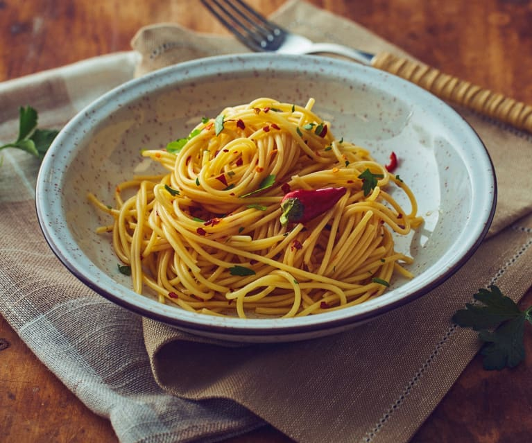

Aglio Olio

This is a recipe of Aglio Olio, it's a type of pasta and the simplest form of pasta, but in pasta cooking,
the simpler, the harder to make
Here are the Ingredients that we need to prepare in order to make the Aglio Olio
Ingredients
- Kosher Salt
- 1 pound Dried Spaghetti
- 1/3 cup Olive Oil
- 8 Garlic Cloves, thinly sliced
- 1/2 teaspoon crushed red pepper flakes
- 1/2 cup fresh parsley, minced
- 1 cup Parmesan cheese, grated
Steps
- Bring a large pot of water to a boil. Add 2
tablespoons of salt and the pasta and cook according to the directions on
the package. Set aside 1 1/2 cups of the pasta cooking water before you drain
the pasta.
- Meanwhile, heat the olive oil over medium heat in a pot large enough to hold the
pasta, such as a 12-inch saute pan or a large, shallow pot. Add the garlic and
cook for 2 minutes, stirring frequently, until it just begins to turn golden on
the edges-don't overcook it! Add the red pepper flakes and cook for 30 seconds
more. Carefully add the reserved pasta-cooking water to the garlic and oil and
bring to a boil. Lower the heat, add 1 teaspoon of salt, and simmer for about 5
minutes, until the liquid is reduced by about a third.
- Add the drained pasta to the garlic sauce and toss. Off the heat, add the
parsley and Parmesan and toss well. Allow the pasta to rest off the heat for
5 minutes for the sauce to be absorbed. Taste for seasoning and serve warm with
extra Parmesan on the side.